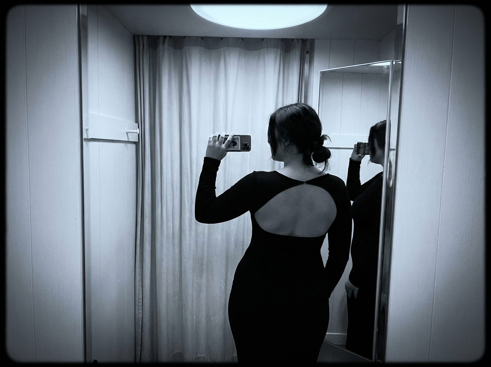
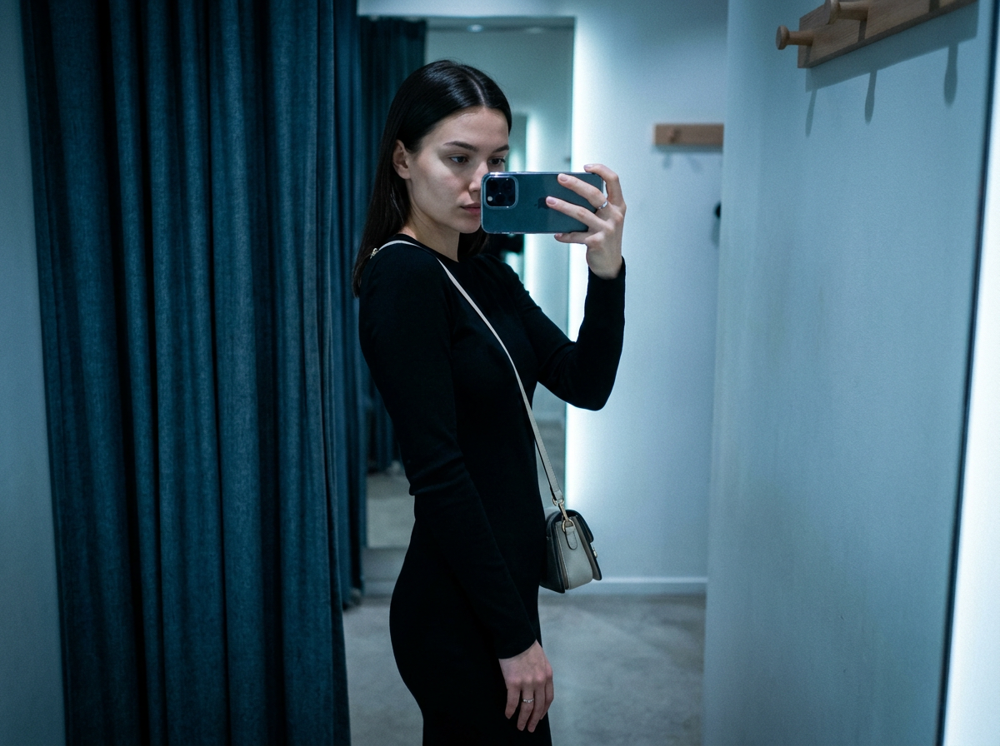
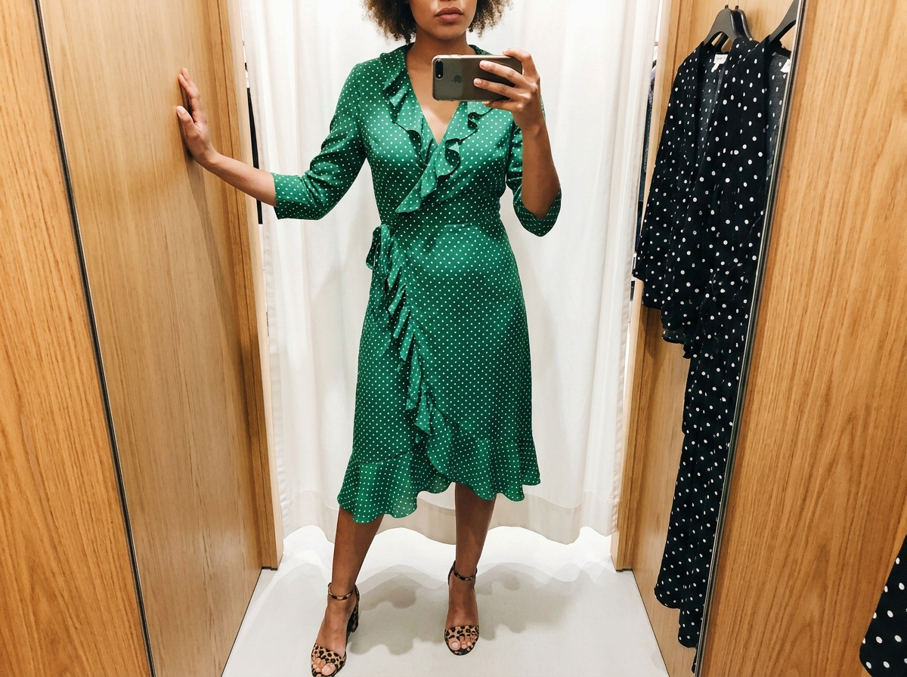
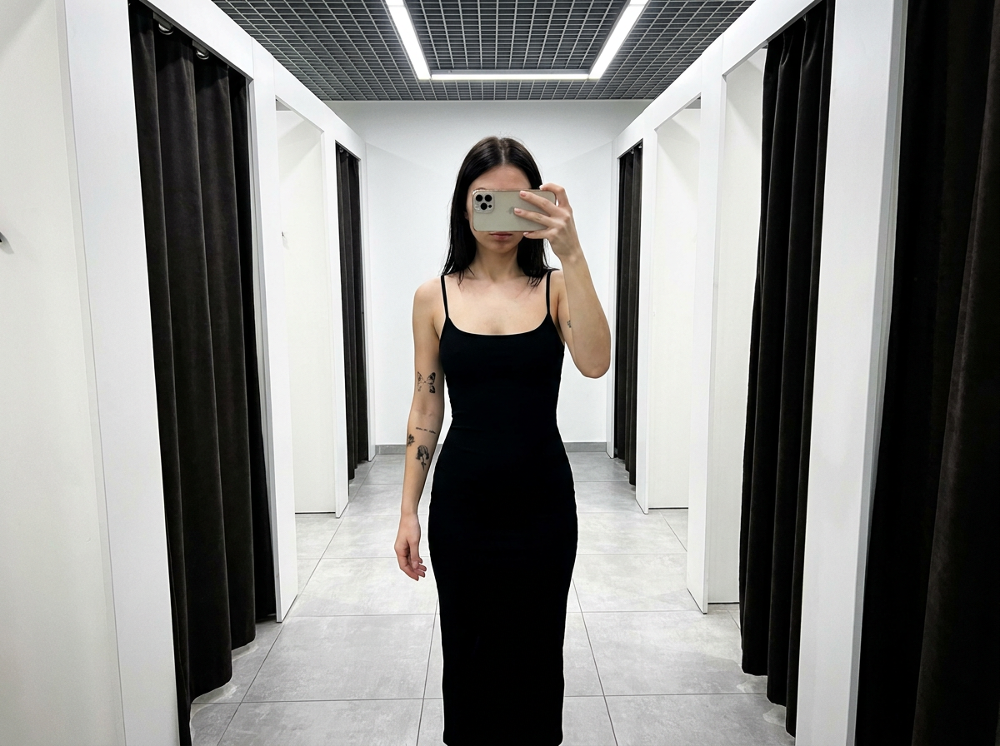
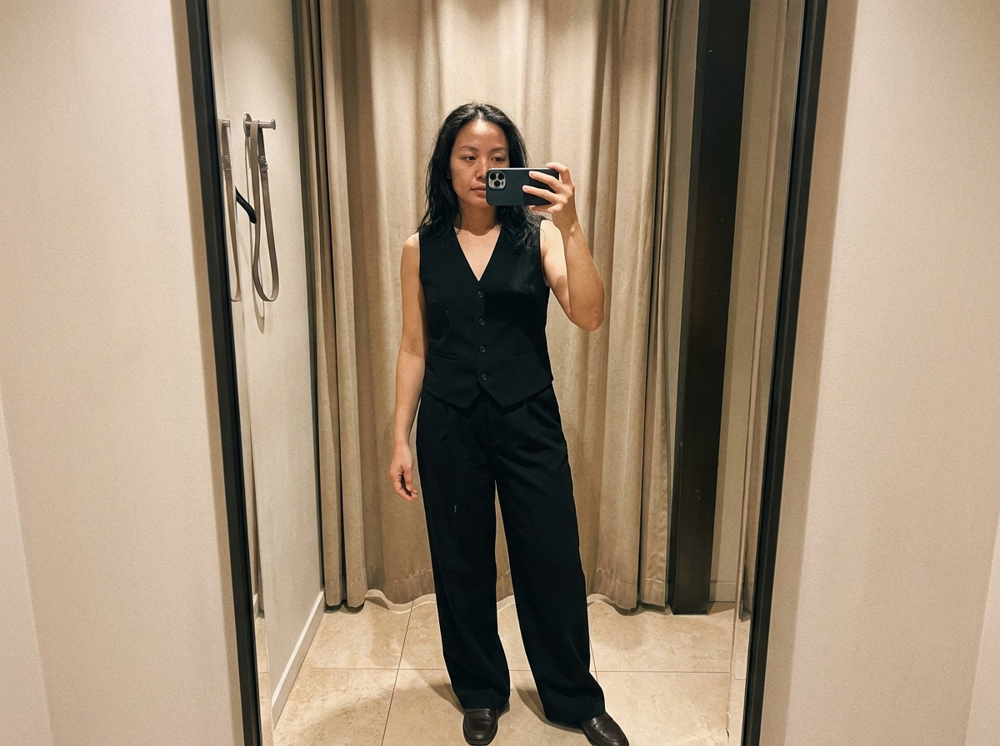
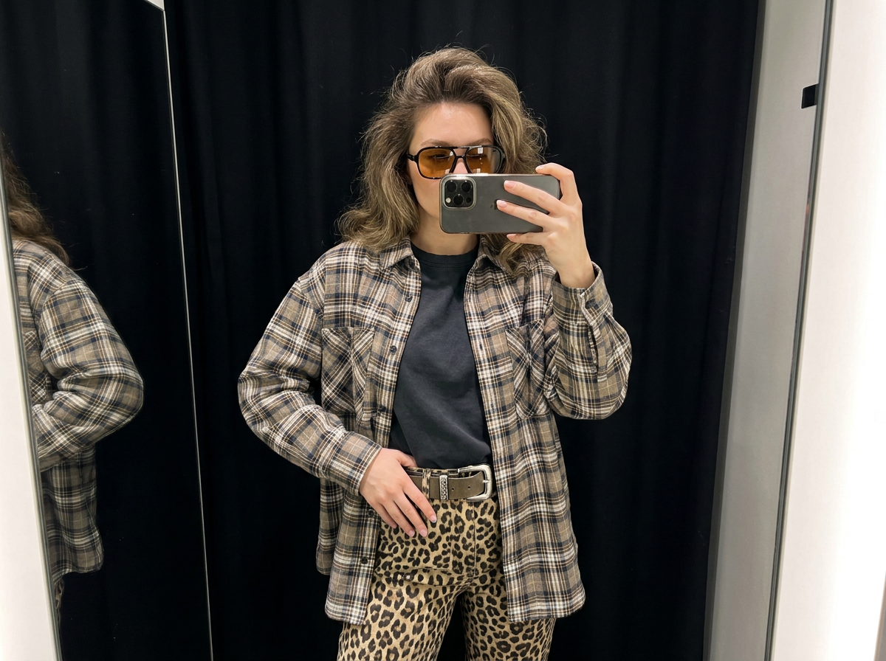
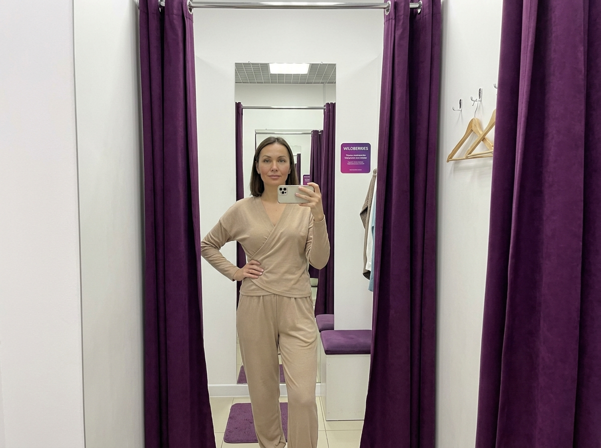
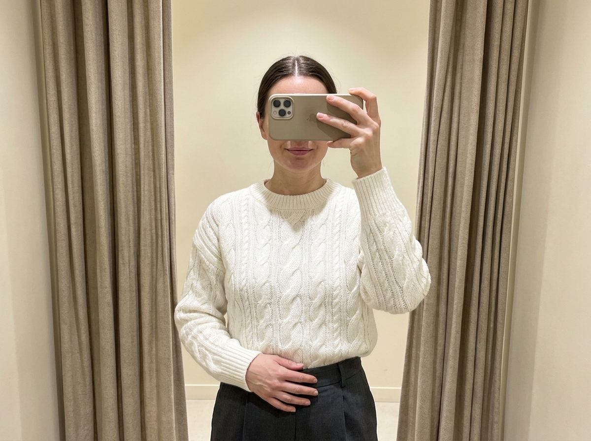
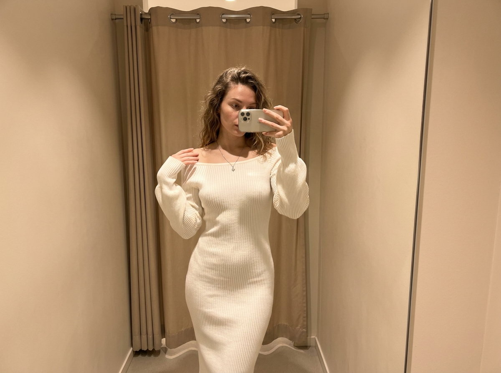
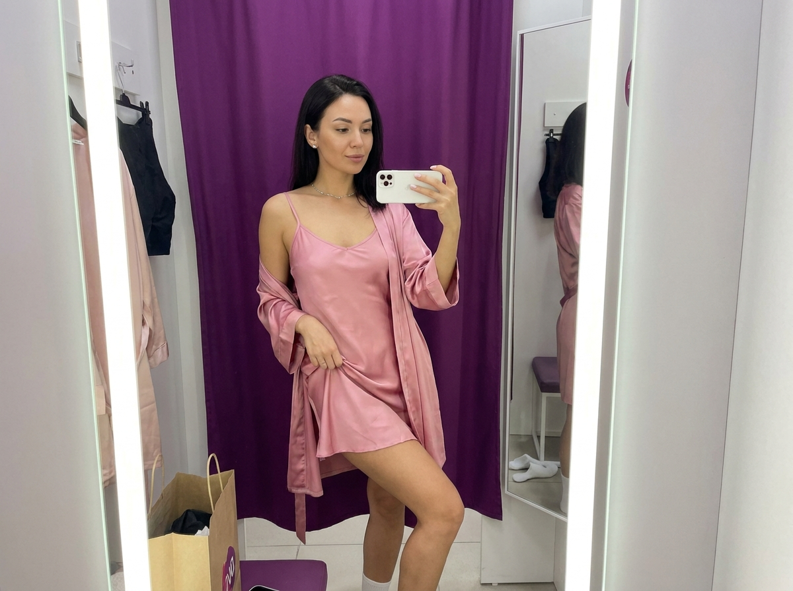

ИИ-фото из ПВЗ: 10 промптов для нейросети

Обычное селфи из примерочной часто выглядит случайным: зеркало искажает пропорции, телефон закрывает лицо, а фон перетягивает внимание. Генерация помогает собрать аккуратный fashion-кадр даже тогда, когда удачный снимок в пункте выдачи не получился.
В подборке — 10 сценариев для вертикальных фото: от чёрно-белого селфи со спины до цветных кадров с фиолетовыми шторами, вязаным свитером, очками и примеркой образа в полный рост.
Как сгенерировать такое фото: пошагово
Нужен снимок анфас при ровном свете, лицо в кадре целиком, без тёмных очков и головных уборов. Разрешение от 1000 пикселей по короткой стороне. Чем чётче исходник, тем точнее модель повторит черты.
Выберите сценарий ниже и нажмите «Копировать» — текст уйдёт в буфер целиком, вместе с командой сохранения внешности. Эта команда стоит первой строкой и отвечает за то, чтобы на выходе было ваше лицо, а не случайное.
Кнопка «Сгенерировать» рядом с каждым промптом открывает модель в новой вкладке. Nano Banana Pro работает с референсом лица — в отличие от моделей, которые генерируют портрет с нуля и узнаваемость теряют.
Промпт — в поле ввода, портрет — через загрузку референса. Порядок значения не имеет, но без референса команда сохранения внешности работать не будет: модели нечего сохранять.
Для сторис и ленты берите 9:16, для превью и обложек — 4:3. Первый результат редко идеален: если поза или свет ушли не туда, поправьте соответствующую часть промпта и запустите заново. Обычно хватает двух-трёх итераций.
10 промптов для генерации
1. Чёрно-белое селфи со спины
Строго сохранить внешность по загруженному референсу: черты лица, пропорции, мимику и текстуру кожи без изменений. Фотореалистичное вертикальное fashion-селфи в зеркале примерочной, чёрно-белая съёмка с драматичным контрастом, минималистичной композицией, мягкой виньеткой и лёгким плёночным зерном. Узкая кабинка отделана белыми панелями; слева частично попадает угол стены, а на заднем плане висит светлая тканевая занавеска с хорошо различимыми вертикальными складками. Свет приглушённый, ровный, холодно-нейтральный, с чистыми серыми полутонами и чёткими, но мягкими тенями. Взрослая женщина стоит спиной к камере и смотрит в зеркало, поэтому лица не видно. Волосы гладко убраны назад, заметны пробор и естественная текстура прядей. На ней чёрное облегающее платье или bodycon-комплект с глубоко открытой спиной. Реалистичная кожа, натуральные волосы, без пластикового эффекта. Камера смартфона, вертикальный кадр, пропорции тела естественные, без текста и логотипов.
2. Профиль у синей шторы

Строго сохранить внешность по загруженному референсу: черты лица, пропорции, мимику и текстуру кожи без изменений. Создай фотореалистичный вертикальный mirror selfie в стиле moody fashion. Девушка стоит в узкой примерочной боком к зеркалу и фотографирует своё отражение смартфоном; в композиции одновременно читаются её фигура слева или по центру и край стены справа. Позади расположена плотная тёмно-синяя занавеска с глубокими вертикальными складками и заметной фактурой ткани. Справа видна светлая белая стена с несколькими металлическими крючками для одежды, но никаких брендов, надписей или бирок. Внизу — нейтральный пол и плинтус. Освещение прохладное и приглушённое, тени мягкие, цветокоррекция с лёгким синеватым оттенком. У девушки ухоженная естественная кожа, гладкие волосы с ровным пробором, спокойное слегка сосредоточенное выражение, взгляд направлен на отражение. Телефон закрывает часть лица, но не искажает тело. Реалистичные материалы, вертикальная перспектива, без артефактов.
3. Примерочная с дубовыми панелями

Строго сохранить внешность по загруженному референсу: черты лица, пропорции, мимику и текстуру кожи без изменений. Вертикальный фотореалистичный fashion mirror selfie в узкой магазинной кабинке. Девушка снимает себя на смартфон перед зеркалом, телефон частично или полностью закрывает лицо. По бокам расположены деревянные панели тёплого дубового оттенка: слева видна створка, справа — стенка и её кромка. Сзади находится молочно-белая занавеска с вертикальными складками и мягкими бликами на ткани. Справа в кадре — ряд вешалок с чёрной одеждой в белый горох; ткани и крой выглядят натурально, логотипов и читаемых надписей нет. Внизу оставь нейтральную магазинную напольную зону со светлой плиткой. Используй чистый store lighting, мягкие тени, естественные отражения и едва заметное телефонное зерно. Геометрия кабинки должна быть правдоподобной: ровные углы, прямые линии панелей, без ломаной перспективы. Волосы аккуратно уложены, фактура прядей реалистичная, пропорции тела естественные.
4. Светлая кабинка с тёмными шторами

Строго сохранить внешность по загруженному референсу: черты лица, пропорции, мимику и текстуру кожи без изменений. Фотореалистичное вертикальное mirror selfie в примерочной магазина. Девушка стоит по центру и фотографирует себя смартфоном, полностью закрывающим лицо; вокруг телефона видна только часть волос с аккуратным центральным пробором. Тело имеет естественные пропорции, кожа выглядит живой, с нормальной текстурой без глянцевого пластикового эффекта. Кабинка оформлена белыми ровными панелями, по обеим сторонам свисают почти чёрные шторы с длинными вертикальными складками. Пол светло-серый плиточный, хорошо различимы швы. Вверху находится кассетный или решётчатый потолок с несколькими яркими сегментами встроенных ламп. Свет магазинный, нейтральный, с мягкими тенями и без выбитых бликов. На руке допускается небольшой неброский рисунок или татуировка. Сохрани реалистичную анатомию кистей, телефона и отражения, не добавляй текст, бренды или лишние предметы.
5. Тёплое селфи в полный рост

Строго сохранить внешность по загруженному референсу: черты лица, пропорции, мимику и текстуру кожи без изменений. Сделай фотореалистичное вертикальное fashion-селфи в зеркале, full-body: взрослая девушка целиком видна в узкой примерочной и снимает себя смартфоном. Интерьер освещён тёплым мягким светом, на заднем плане — бежевые текстурные занавески с выраженными вертикальными складками. Справа расположено большое зеркало в тёмной раме; рядом заметны небольшой крепёж и вешалка с ремешками или крючками, но на них нет текста, QR-кодов, бирок и логотипов. Светлый бежево-серый плиточный пол показывает швы между плитками. Добавь умеренное боке на дальнем фоне, натуральные тени и правдоподобную фактуру ткани. У девушки естественные пропорции, ухоженные волосы с отдельными живыми прядями, реалистичная кожа. Поза спокойная, повседневная, без чрезмерной модельной вычурности. Отражение, рама зеркала и линия пола должны совпадать по перспективе; кадр выглядит как настоящее фото из магазина.
6. Street-style на чёрном фоне

Строго сохранить внешность по загруженному референсу: черты лица, пропорции, мимику и текстуру кожи без изменений. Фотореалистичное вертикальное mirror selfie в примерочной, кадр от головы примерно до бедра. Девушка снимает себя смартфоном, направленным на отражение; по краям видны границы зеркальной поверхности и лёгкие боковые отражения. За ней — матовая чёрная штора или студийный тёмный фон. Свет мягкий, студийно-естественный, без жёстких засветов, с реалистичными тенями на лице и одежде. Настроение повседневного street style и outfit of the day. У девушки объёмные у корней волосы, лицо частично перекрыто телефоном, но видны губы и лёгкий наклон головы. Выражение нейтральное и уверенное. На ней тёмные солнечные очки с янтарно-жёлтыми линзами и реалистичными отражениями на стекле, сверху объёмная клетчатая рубашка или oversize-плед с закатанными рукавами. Сохрани натуральную фактуру ткани, точную анатомию рук и телефона, без брендов и надписей.
7. Фиолетовая кабинка Wildberries

Строго сохранить внешность по загруженному референсу: черты лица, пропорции, мимику и текстуру кожи без изменений. Фотореалистичный вертикальный mirror selfie в небольшой настоящей примерочной Wildberries, поданный как современный fashion-контент. В тесной кабинке находятся белые стены, металлические направляющие и глубокие фиолетовые или пурпурные шторы с естественными складками. В полный рост отражается девушка, мягкий магазинный свет равномерно освещает фигуру, пространство выглядит правдоподобно и не превращается в студию. Используй внешность с референсной фотографии: сохрани форму глаз, носа, губ, подбородка, скул, овал лица, мимику и индивидуальные особенности. Лицо хорошо читается, телефон находится чуть ниже уровня глаз или немного сбоку. Взгляд направлен в зеркало, выражение спокойное, уверенное, слегка игривое и женственное. Поза расслабленная: корпус немного развёрнут к зеркалу, вес перенесён на одну ногу. Добавь реалистичные отражения, натуральную кожу, аккуратные волосы, правильную геометрию зеркала, без лишних надписей и артефактов.
8. Белый свитер и бежевые шторы

Строго сохранить внешность по загруженному референсу: черты лица, пропорции, мимику и текстуру кожи без изменений. Создай фотореалистичное вертикальное fashion-селфи в зеркале примерочной, средний план примерно до талии или бедра. Девушка фотографирует себя смартфоном у плотных бежевых или молочных штор; ткань имеет мягкую фактуру и длинные вертикальные складки. Фон максимально нейтральный, без лишних деталей, интерьер выдержан в тёплой кремово-бежевой гамме. Свет приглушённый и мягкий, без резких пересветов. У девушки аккуратный центральный или слегка смещённый пробор, натуральная кожа с видимой текстурой, минимальный макияж. Телефон частично закрывает лицо, но видны губы и лёгкая улыбка либо спокойное выражение. На ней объёмный белый вязаный свитер крупной или средней вязки с рельефным узором и косами. Покажи объём пряжи, отдельные петли и естественные складки одежды. Кадр должен выглядеть как реальная примерка: правильное отражение, спокойная поза, отсутствие текста, логотипов и декоративного визуального шума.
9. Песочные оттенки и зеркало

Строго сохранить внешность по загруженному референсу: черты лица, пропорции, мимику и текстуру кожи без изменений. Фотореалистичное вертикальное fashion mirror selfie с тёплым интерьерным освещением, реалистичными материалами и мягкими тенями. Женщина стоит в узкой кабинке с матовыми молочно-бежевыми стенами и лёгкой фактурой. На задней стене висит большая песочно-бежевая штора с вертикальными складками; сверху видны металлическая перекладина и люверсы или кольца, но без бирок и надписей. Справа проходит тонкая вертикальная кромка зеркала или гладкая зеркальная створка. Внизу оставь часть светлого нейтрального пола и линию основания. Атмосфера аккуратного минималистичного магазина, никаких логотипов и текста. Волосы распущены, слегка волнистые, отдельные естественные пряди лежат у лица и на плечах. Смартфон частично перекрывает лицо, камера находится примерно на уровне глаз, ракурс автопортрета. Сохрани естественные пропорции, натуральную кожу, точную геометрию отражения и вертикальный формат.
10. Фиолетовый свет у зеркала

Строго сохранить внешность по загруженному референсу: черты лица, пропорции, мимику и текстуру кожи без изменений. Фотореалистичное вертикальное fashion mirror selfie в примерочной, стилизованной под Wildberries fitting room. Пространство тесное и правдоподобное: насыщенно-фиолетовая штора, белые панели, мягкая подсветка вдоль края зеркала и нейтральный магазинный свет, как в торговом центре. Используй лицо с референсного фото и сохрани его индивидуальные черты: форму глаз, носа, губ, подбородка, скул, овал, мимику и пропорции. Лицо открыто и хорошо видно, смартфон находится чуть ниже или сбоку, не перекрывая черты. Взгляд направлен в зеркало, выражение спокойное, уверенное, лёгкое, с мягкой женственной подачей. Девушка стоит расслабленно: одна нога немного согнута и выставлена вперёд, корпус слегка развёрнут к зеркалу. Одна рука держит белый или светлый смартфон. Сделай правдоподобные пальцы, отражения, складки шторы и свечение по кромке зеркала; не добавляй случайный текст, логотипы или лишние предметы.
Что важно учесть в этом стиле
Основу такого кадра задаёт не сама одежда, а геометрия зеркала. В промпте лучше сразу указать вертикальный формат 4:5 или 9:16, план съёмки и положение телефона. Для реалистичного результата подойдут параметры, похожие на съёмку смартфоном: эквивалент 26–28 мм, диафрагма около f/1.8–2.2, мягкая детализация без сильного размытия.
Отдельно описывайте материалы: складки шторы, швы плитки, кромку зеркала, фурнитуру и отражения на экране. Если лицо должно быть скрыто, напишите об этом прямо. Если нужна узнаваемость по референсу, наоборот, задайте положение телефона ниже глаз или сбоку и попросите не перекрывать черты.
Идеи для вариаций
- Замените холодный магазинный свет на тёплый световой градиент от 3200 до 4000 К.
- Попросите кадр в формате 9:16 для сторис или 4:5 для ленты.
- Добавьте отражение вспышки на зеркале, но без пересвета лица и одежды.
- Поменяйте штору на графитовую, терракотовую или оливковую.
- Сделайте серию из трёх поз: прямо, вполоборота и с одной согнутой ногой.
- Для более журнального эффекта добавьте мягкое зерно 10–15% и лёгкую виньетку.
Как собрать свой промпт
Сначала задайте техническую основу: фотореализм, вертикальный кадр, mirror selfie, план от головы до бедра или full-body. Затем опишите кабинку по слоям — стены, штору, зеркало, пол, свет и детали на заднем плане. Такой порядок помогает нейросети не смешивать предметы и не ломать перспективу.
После локации добавьте персонажа: волосы, положение телефона, выражение лица, одежду и позу. В конце закрепите ограничения: без логотипов, читаемого текста, лишних пальцев, кривых линий и пластиковых лиц. Если результат почти удачный, меняйте за один заход только один параметр и делайте 4–8 вариантов.
Ошибки, из-за которых кадр не получается
- Слишком общий фон. Нейросеть смешивает примерочную, студию и торговый зал, если не задать штору, зеркало и стены отдельно.
- Неуказанный план. Без слов «по бедро» или «в полный рост» ноги и одежда часто обрезаются.
- Противоречивое лицо. Нельзя одновременно просить полностью закрыть лицо телефоном и показать все черты.
- Перегруженное описание одежды. Несколько конкурирующих нарядов приводят к случайным рукавам, застёжкам и узорам.
- Игнорирование отражения. Проверьте, чтобы телефон, руки и направление взгляда совпадали в реальности и в зеркале.
- Отсутствие запретов. Добавьте ограничения на логотипы, случайные надписи, лишние пальцы, деформированные крючки и ломаную перспективу.
Частые вопросы
Как сделать такое ИИ-фото бесплатно?
Попробуйте Kandinsky или Шедеврум: они подходят для генерации по тексту, но точность лица и работу с референсом могут ограничивать. В Krea AI и Arena.ai есть удобные режимы тестирования, однако доступность функций, число попыток и качество загрузки референса меняются. Для узнаваемого портрета используйте чёткое фото без фильтров и проверяйте правила сервиса: бесплатный режим не всегда сохраняет сходство и может добавлять водяные знаки.
Почему телефон закрывает всё лицо?
Модель воспринимает mirror selfie как типичный кадр, где смартфон находится перед лицом. Укажите положение телефона: «ниже уровня глаз» или «немного сбоку», а также отдельно напишите, что глаза, нос и губы должны быть полностью видны. Если лицо всё равно искажается, сначала сгенерируйте позу без референса, а затем исправьте лицо отдельным инструментом.
Как добиться реалистичного зеркального отражения?
Опишите, что камера направлена на отражение, а положение тела, телефона и рук должно совпадать с зеркальной версией. Добавьте фразы «без двойных отражений», «ровная вертикальная геометрия» и «один смартфон». Помогает и умеренная детализация: слишком много мелких предметов повышает риск ошибок.
Что делать, если нейросеть добавляет логотипы и текст?
В конце промпта явно запретите логотипы, названия магазинов, QR-коды, бирки и читаемые надписи. Для уже готового изображения используйте маскирование проблемной зоны или повторную генерацию с пустой фурнитурой. Надписи на шторах, телефоне и крючках лучше не задавать вовсе, если они не нужны сюжету.